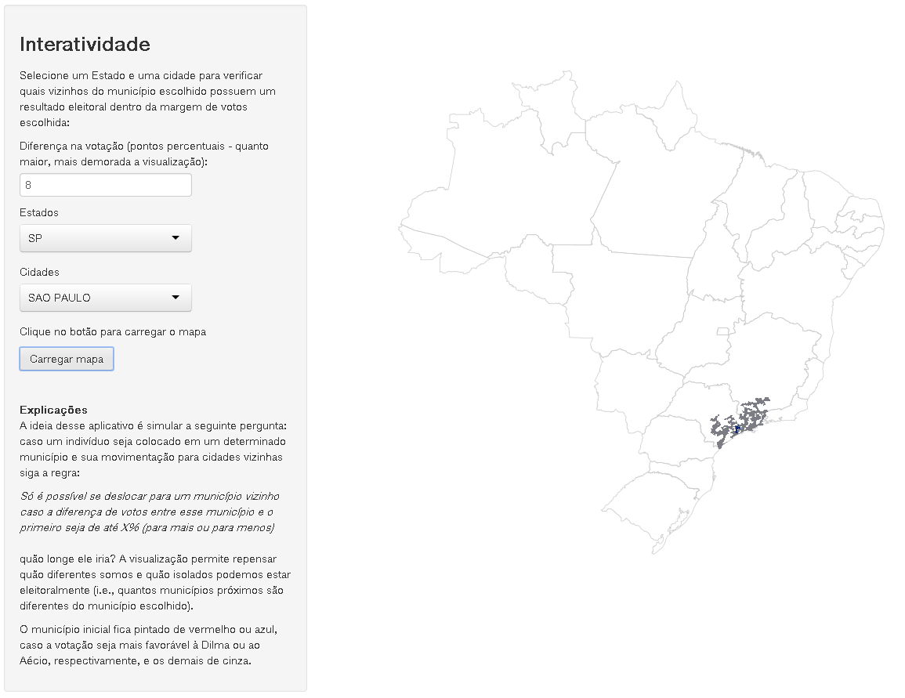
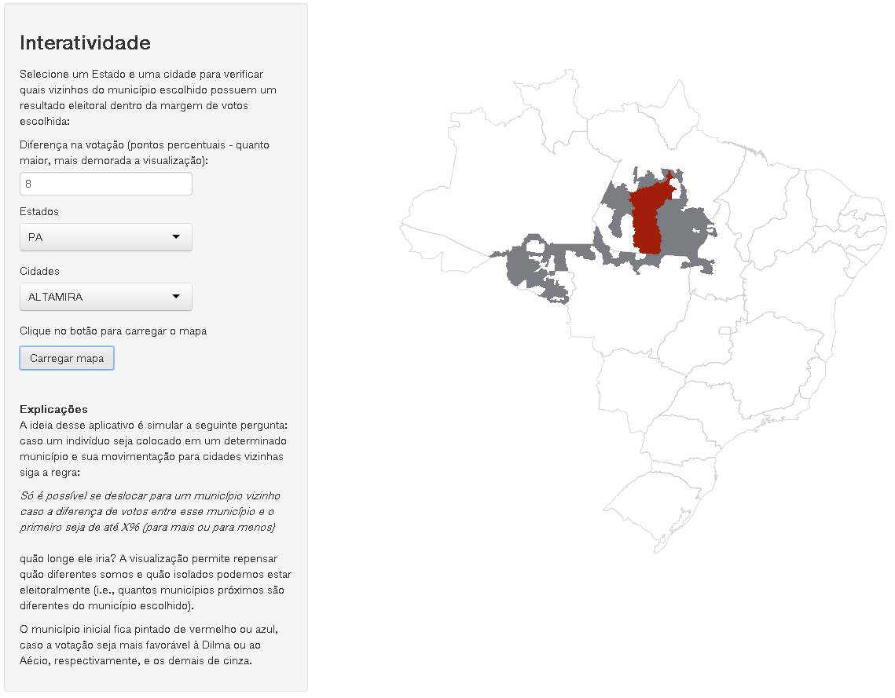

Eleições / Arquivo
Ilhas e eleições (Shiny + R + QGIS)
Escolha um município e descubra até onde é possível viajar por municípios vizinhos com votações parecidas no segundo turno de 2014.
Publicação original
Faz algum tempo que conheci o pacote Shiny e estava cogitando se produzia algo com ele. Para quem não conhece, o Shiny é uma estrutura desenvolvida pelo RStudio que torna muito fácil a criação de aplicações na web com o R. As notícias recentes sobre separatismo, as mensagens nas redes sociais e a sensação de falta alguma noção de perspectiva sobre o quão grande e heterogêneo é o país (em todos os aspectos) me levaram a criar esse aplicativo no R.
A ideia é a seguinte: imagine um jogo de tabuleiro com o mapa dos municípios brasileiros cuja regra de movimentação é
Dado um município inicial, só é possível se movimentar para um município vizinho caso a diferença da votação no segundo turno de 2014 entre o próximo município e o primeiro seja de até X %.
A pergunta desse jogo é: quão longe você iria uma vez escolhido o município inicial e o valor de X? A resposta para São Paulo (SP) e 8% é a imagem abaixo:


Já para Altamira (PA) e os mesmos 8% seria:


Para testar outras combinações de cidades e valores basta clicar em uma das imagens ou aqui (ressalva: se o valor escolhido for muito elevado o mapa demorará bastante para carregar). Meu propósito com esse mapa, além de ser o primeiro aplicativo com o Shiny, é levantar a dúvida sobre quão certos estamos das nossas convicções e escolhas dada a heterogeneidade de visões ao nosso redor. Ou apenas levantar a reflexão de que o seu bairro e sua timeline não devem ser, nem de perto, uma amostra representativa da população e da realidade do país.
A confecção do aplicativo foi feita utilizando os resultados do segundo turno, o R (com o pacote Shiny) e um pouco do QGIS (para levantar a lista de municípios vizinhos de cada município).